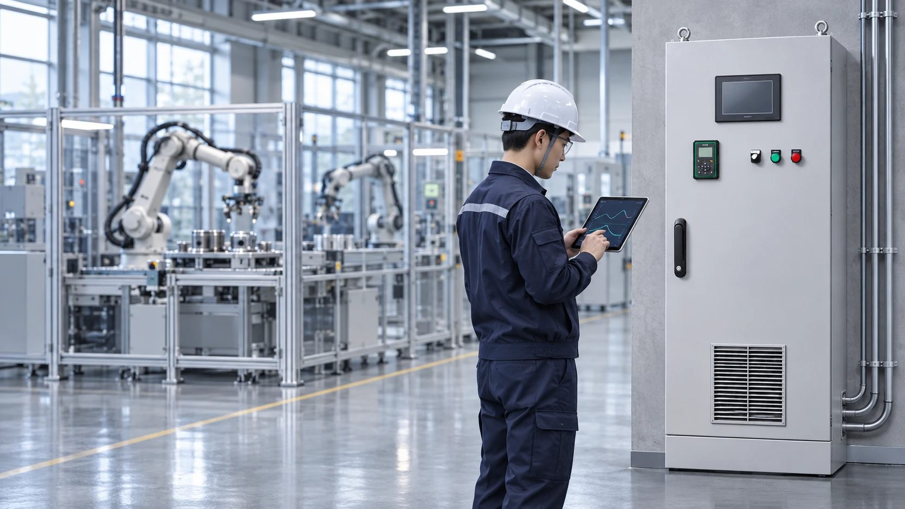

㈜동인엔시스가 '2027년 부산광역시 전략산업 선도기업' 융합부품소재 산업 분야에 선정됐다.
부산테크노파크의 선정 결과 안내에 따르면, 동인엔시스는 2026년 11월 5일 최종선정위원회 심의를 거쳐 선도기업으로 선정됐다. 인증기간은 2027년부터 2029년까지 3년이다.
부산광역시 전략산업 선도기업 제도는 지역 경제성장을 이끌 경쟁력 있는 기업을 발굴·육성하기 위한 사업이다. 부산시와 부산테크노파크는 9대 전략산업을 대상으로 경제성·성장성·혁신성과 함께 기술 경쟁력, 수출 지향성, 성과창출 역량 등을 종합 평가한다. 동인엔시스가 선정된 융합부품소재 분야에는 스마트제조, 로봇, 첨단기계 등이 포함된다.

35년 산업제어 경험
1991년 설립된 동인엔시스는 자동제어반·PLC 제어반·인버터 제어반의 설계와 제작부터 제어 프로그램 개발, 현장 설치 및 시운전까지 수행하는 산업제어 전문기업이다. 제조·조선·해양·수소에너지 등 다양한 산업 현장에서 제어시스템 구축 경험을 축적해 왔다.
설비 제어와 데이터 수집을 결합한 지능형 제어반
주력 솔루션인 '지능형 제어반'은 설비 제어와 운전 데이터 수집을 결합한 것이 특징이다. 현장 PLC가 제어 로직과 안전 인터록을 유지하면서 온도·전류·진동·전력량 등 설비 데이터를 수집하고, 이를 클라우드 또는 고객사 서버로 연결한다. 수집된 데이터는 표준 데이터 구조와 API를 통해 제조실행시스템(MES), AI 분석, 디지털트윈 등과 연계할 수 있도록 구성했다.
동인엔시스는 제어반과 현장 설비를 담당하는 운영기술(OT) 역량을 바탕으로, 스마트팩토리·AI·MES 솔루션 기업과 협업하는 사업 모델도 제시하고 있다. IT 기업이 플랫폼과 분석 서비스에 집중할 수 있도록 제어반 제작, PLC·센서 연동, 데이터 수집 및 서버 연결 등 현장 구간을 담당하는 방식이다.
현재는 설비 데이터 인프라 구축과 AI 이상탐지 개념검증(PoC)을 진행하고 있으며, 향후 실데이터 기반 이상감지·예지보전 고도화와 디지털트윈 연계를 추진하는 로드맵을 제시하고 있다.
한편, '2027년 부산광역시 전략산업 선도기업 인증서 수여식'은 오는 2026년 12월 3일 부산 남구 그랜드모먼트 클래식홀에서 개최될 예정이다.
▶ 홈페이지: https://donginensis.com
▶ 지능형 제어반 제조기업 도입 안내: https://donginensis.com/manufacturing.html
▶ IT기업 협업(OT 구간): https://donginensis.com/partner.html
회사 개요
- 회사명: ㈜동인엔시스 (DONG-IN ENSIS CO., LTD.)
- 대표이사: 백민기
- 설립: 1991년 10월 (법인 전환 1997년 7월)
- 주요 사업: 지능형 제어반, 산업용·선박용 제어시스템 설계·제작, 스마트제조 데이터 솔루션
- 본사: 부산광역시 부산진구 진연로9번길 47
- 홈페이지: www.donginensis.com
보도 문의: 051-862-3668 · dongin@donginmne.com